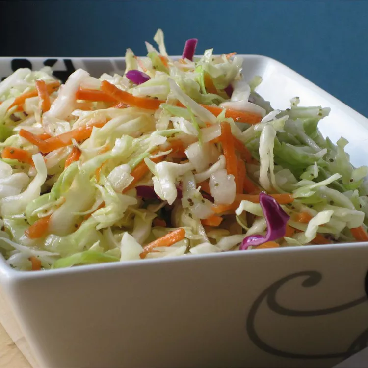

Description
This tangy vinegar coleslaw is perfect for those who like slaw with no mayonnaise. I got this wonderful recipe from one of the ladies in my Amish community.
Ingredients
- 1 large head cabbagte, cored and finely shredded
- 1 medium onion, thinly sliced
- 1 cup white sugar
- 3/4 cup vinegar
- 1/3 cup vegetable oil
- 2 teaspoons celery seed
- 1 1/4 teaspoon salt
- 1 teaspoon prepared mustard
- 1/4 teaspoon black pepper
Steps
- Toss cabbage and onion together in a large bown; set aside
- Combine sugar, vinegar, oil, celery seed, salt, mustard, and pepper in a small saucepan; bring to a boil and simmer, stirring frequently, until sugar is dissolved, about 3 minutes. Let mixture cool slightly, about 5 minutes, then pour over cabbage mixture; toss well to coat. Cover and refrigerate at least 2 hour.